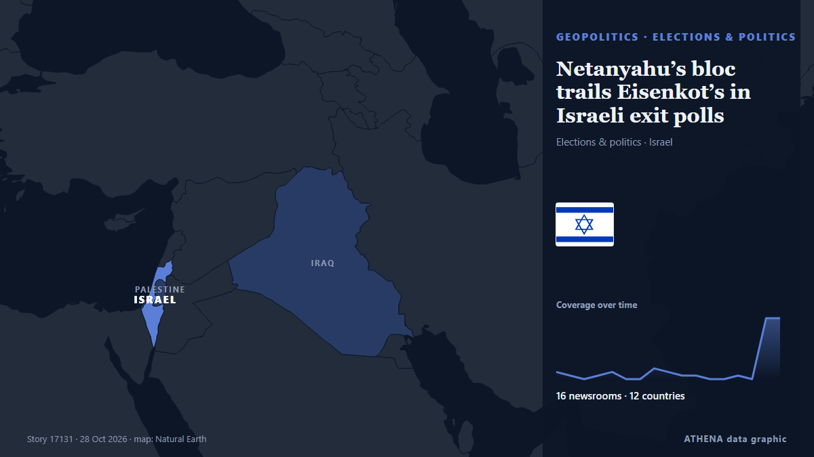

Netanyahu’s bloc trails Eisenkot’s in Israeli exit polls

Eisenkot's bloc leads in 3 of 4 exit polls, but neither major bloc secures 61 seats needed for a parliamentary majority. de Anadolu Agency (English)
Relayé de façon indépendante par 16 médias dans 12 pays depuis le 19 oct. ; premier à l'annoncer : Haaretz (English) ; la couverture s'est calmée. ATHENA juge le risque faible (1.4/10), surtout en raison de la gravité des dommages décrits et de sa portée géographique et sectorielle. La confiance est de 88 % (élevée) : 16 médias indépendants le confirment, avec une fiabilité moyenne des sources de 77 %. Médias par pays : Israël (17), Turquie (7), États-Unis (2). Couverture : du 19 oct. au 28 oct., 196 heures.
Pourquoi c'est important: Les évolutions de sécurité et de diplomatie peuvent déplacer alliances, échanges et marchés bien au-delà des pays directement concernés.
Ce qui a changé : 34 nouveaux articles de 15 rédactions dans les 24 heures jusqu'au 28 oct..
Premier titre : Israel Election Night: How the exit polls, results unfolded amid political deadlock
Les titres sont affichés en anglais, tels que publiés.
En un coup d'œil
Sélectionné, noté et rédigé par la méthodologie publiée d'ATHENA. Aucun rédacteur n'intervient sur un événement en particulier. Comment il est produit ›
| 19 Oct 20:54 UTC | 2 |
|---|---|
| 20 Oct 08:54 UTC | 1 |
| 20 Oct 20:54 UTC | 0 |
| 21 Oct 08:54 UTC | 1 |
| 21 Oct 20:54 UTC | 2 |
| 22 Oct 08:54 UTC | 0 |
| 22 Oct 20:54 UTC | 0 |
| 23 Oct 08:54 UTC | 3 |
| 23 Oct 20:54 UTC | 2 |
| 24 Oct 08:54 UTC | 1 |
| 24 Oct 20:54 UTC | 1 |
| 25 Oct 08:54 UTC | 0 |
| 25 Oct 20:54 UTC | 0 |
| 26 Oct 08:54 UTC | 1 |
| 26 Oct 20:54 UTC | 0 |
| 27 Oct 08:54 UTC | 17 |
| 27 Oct 20:54 UTC | 17 |
| 22 Oct 07:05 UTC | 0.0 |
|---|---|
| 27 Oct 20:21 UTC | 2.1 |
| 27 Oct 20:51 UTC | 1.7 |
| 28 Oct 00:25 UTC | 3.0 |
| 28 Oct 08:27 UTC | 1.5 |
| 28 Oct 08:27 UTC | 1.4 |
Pourquoi ces chiffres
Importance
Risque
Confiance
La couverture : qui l'a annoncé, et quand
titre tel que publié · ouvre l'original- Haaretz (English) · IsraëlEisenkot bloc leads Netanyahu in two new polls, but falls short of a majority without Arab parties
- Haaretz (English) · IsraëlFar-right party head says Netanyahu, Smotrich met with his rabbi to help push him out of race
- Haaretz (English) · IsraëlBoth blocs agree: Netanyahu will push party of far-right rival Ofer Winter below electoral threshold
- The Jerusalem Post · IsraëlEisenkot leads Netanyahu as Winter, Hendel-Zelekha may not cross electoral threshold - poll
- Haaretz (English) · IsraëlNew polls show Eisenkot ahead, two parties at edge of electoral threshold
- The Jerusalem Post · IsraëlNetanyahu bloc falls to 48 seats as opposition reaches 54, days before election - poll
- Anadolu Agency (English) · TurquiePoll shows Netanyahu’s bloc losing 3 seats as opposition leads with 54 to 48 ahead of Israeli elections
- Haaretz (English) · IsraëlLast polls before Israel's election put Eisenkot ahead of Netanyahu as both lack majority
- Anadolu Agency (English) · TurquieNetanyahu bloc trailing opposition with projected 50 seats to 52 in final Israeli election polls
- Haaretz (English) · IsraëlThe latest election stories from the past day
- Türkiye Today · TurquieFinal Israeli election polls leave Netanyahu bloc stuck at 50 seats, short of majority
- The Jerusalem Post · IsraëlEisenkot leads Netanyahu but deadlock looms, election polls show two days before Israelis vote
- Anadolu Agency (English) · TurquieIsrael votes Tuesday in closely contested election as Netanyahu faces challenge from Eisenkot
- Middle East Eye · INTPolls open as Netanyahu fights to retain power
- Haaretz (English) · IsraëlElection exit polls: Majority of voters back opposition, but Netanyahu's Likud emerges as largest party
- Middle East Eye · INTExit polls show Eisenkot-led bloc ahead of Netanyahu’s, gains for Palestinian-led parties
- Middle East Eye · INTIsraeli exit polls show huge Palestinian gains block Netanyahu from forming government
- Fox News (World) · États-UnisNetanyahu gains overnight as Israel election heads toward political deadlock
- The Jerusalem Post · IsraëlIsrael Election Night: How the exit polls, results unfolded amid political deadlock
- Middle East Eye · INTIsraeli exit polls show huge Palestinian gains block Netanyahu and Eisenkot from forming majority
- The Jerusalem Post · IsraëlHaredi parties Shas, UTJ set to win 14 combined seats in 2026 Israeli election
- The Jerusalem Post · IsraëlPeople of Israel, Reservists-Economic, Haredi Public fall short of threshold in Israeli election
- Middle East Eye · INTNetanyahu’s Likud party is projected to have won the most seats of any single party, report says
- Anadolu Agency (English) · TurquieNetanyahu’s bloc trails Eisenkot’s in Israeli exit polls
- Foreign Policy · États-UnisDramatic Changes Are Unlikely in Israel, Even if Netanyahu Is Ousted
- Arab News · Arabie saouditeFirst Israeli election exit polls show narrow edge for opposition
- Shafaq News (English) · IrakIsrael exit polls show Likud leading, no majority
- TASS (English) · RussieNetanyahu’s party is first in Israel’s elections, but opposition bloc winning more seats
- Dawn · PakistanNetanyahu scrambles for votes as Israelis turn out in record numbers
- Haaretz (English) · IsraëlEisenkot urges Israel to avoid second election, warns Netanyahu against exploiting war for political gain
- Haaretz (English) · IsraëlEisenkot vows to 'build Zionist, pro-IDF enlistment government' after exit polls
- Greek City Times · GrèceIsrael Election: Exit Polls Put Netanyahu’s Likud First but No Bloc Wins a Majority
- Haaretz (English) · IsraëlThere is only one way Eisenkot can ensure victory
- Haaretz (English) · IsraëlLiberal U.S. Jewish groups hail Israeli exit polls as rebuke to Netanyahu
- Gulf News · Émirats arabes unis‘We won’: Eisenkot claims ‘complete victory’ in Israeli elections as exit polls show Netanyahu’s bloc collapsing — but no bloc has a 61-seat majority yet
- The Rio Times · BrésilIsrael Exit Polls Leave Netanyahu Short
- Anadolu Agency (English) · TurquieArab party leader seeks 61-seat majority with Israeli opposition to oust Netanyahu
- Gulf News · Émirats arabes unisIsraeli elections: Who is Gadi Eisenkot? The general challenging Netanyahu — and facing a coalition test
- Anadolu Agency (English) · TurquieRevised Israeli exit polls put Netanyahu’s bloc and opposition at 51 seats each
- Middle East Eye · INTNetanyahu's bloc overtakes Eisenkot's, as Palestinian-led parties rise to 19 seats